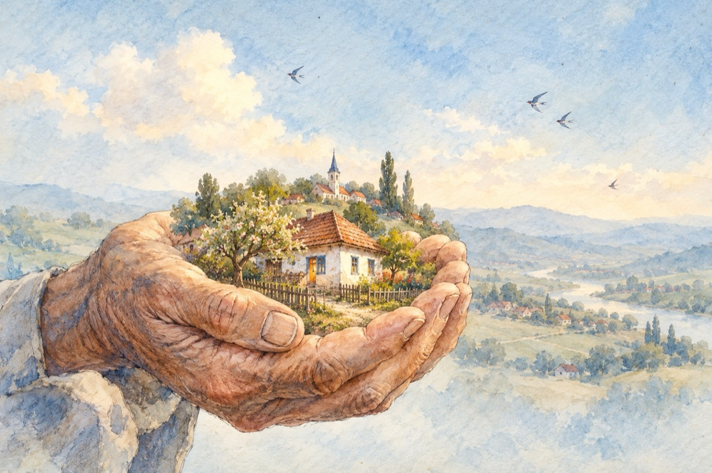

Fratelui meu, Toader (1935–2012)
Copil sărman
Voi știți sătenii mei iubiți
Că de copil am fost cu voi
Venit dintre cei oropsiți
Din secetă și din nevoi.
Și cuib mi-a fost de bună samă
Sătucu-n care am crescut
Și mi-am lăsat departe-o mamă
Printre străini m-am rătăcit.
Cu-aceste două mâini cândva
Ce astăzi sunt neputincioase
Mi-am construit frumos viața
Familie, copii și case.
Acum când vorba-mi este dusă
Și trupul stă neputincios –
Când viața mea este apusă
Și stă-n puterea lui Hristos.
Mă rog lui Dumnezeu prea sfântul
De am greșit să fiu iertat
Cu timpul să-ntregesc pământul
Să fiu primit în solul mult visat!
Vasile Groza